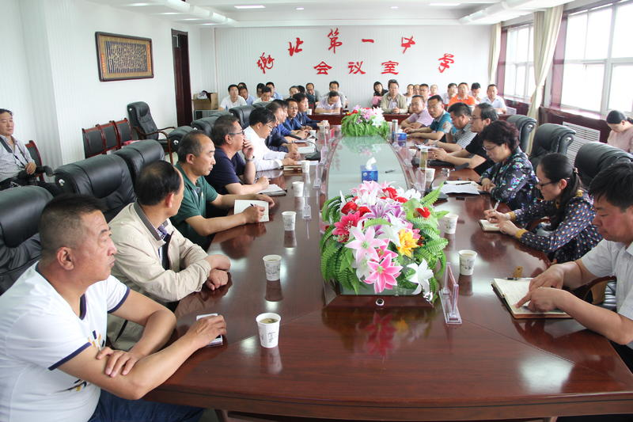

当前位置:
首页>校园新闻
张北县县长李鹏举到我校视察高考备考工作
2017年05月29日 10:14:32
5月27日，张北县县长李鹏举深入我校，看望高三一线教师。希望更加坚定信心，调心态，减压力，以最饱满的精神状态迎接即将到来的2017年的高考，力争更好的高考成绩。县政府副县长李映虹、政府办公室主任杨巍、政府办公室副主任路雪飞、县财政局局长梁海平、县教育局局长安亚平等陪同视察。
李县长在李振义校长的陪同下走进我校即将建好的文化长廊，纯厚的文学氛围，浓厚的校园底蕴充分展示出了一中的蓬勃向上的精神。在随后召开的座谈会上，我校李振义校长汇报了高考备考工作情况，教师代表樊利萍汇报了高三教师最后冲刺准备工作。在听取汇报后，李鹏举县长对我校高考备考工作给予了充分的肯定，并代表县委、县政府向一直默默奉献在一线的高三教师表示亲切的慰问和衷心的感谢，希望在最后的几天里老师们更加努力，为争取更好的成绩加油。
面对县委、县政府对我校师生备战高考的充分肯定，我校高三师生将会拼尽全力，誓夺2017年高考的全面胜利。

- 南开大学向我校发来喜报
- 张家口副市长陈冲莅临张北一中调研
- 张北县李映虹副县长莅临张北一中视察
- 张北县第一中学举行高考百日誓师励志大会
- 张北县第一中学召开高一、高二家长座谈会
李正义 张北一中现任校长，在他的领导下，张北一中的成绩取得了巨大的成就。